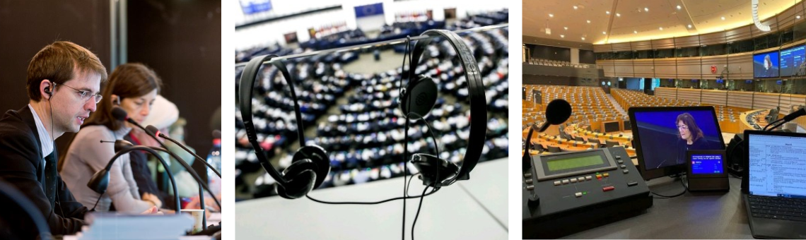
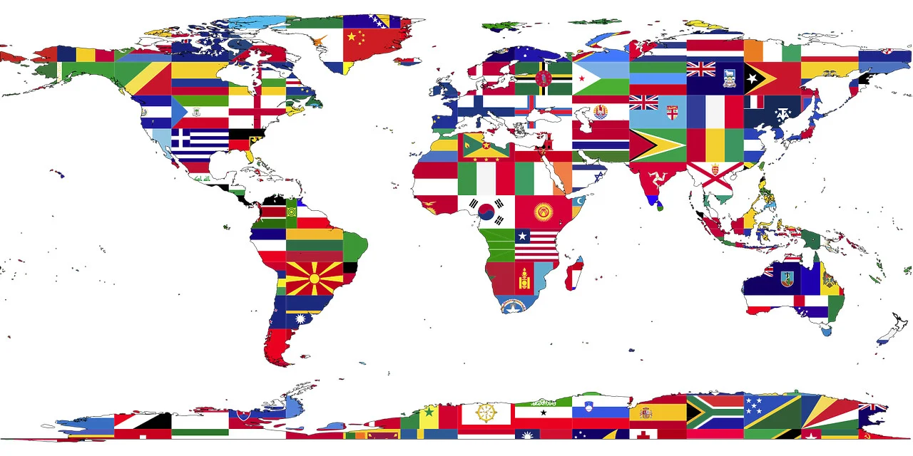

Dia Internacional da Tradução30 de setembro de 2024O Dia Internacional da Tradução celebra-se anualmente a 30 de setembro, data que corresponde ao dia do falecimento de São Jerônimo, o tradutor bíblico considerado o santo padroeiro dos tradutores. Este dia procura enaltecer o trabalho dos profissionais da língua que desempenham um papel importante na aproximação das nações, facilitando o diálogo, a compreensão e a cooperação. A celebração do Dia Internacional da Tradução visa destacar a importância da tradução para a comunicação global, permitindo a compreensão mútua entre diferentes culturas e idiomas. É uma oportunidade para reconhecer o trabalho dos tradutores e intérpretes, que desempenham um papel crucial na mediação de diálogos entre nações e na promoção da diversidade cultural. As línguas são essenciais para a identidade, comunicação, integração social, educação e desenvolvimento dos povos e sociedades. Verifica-se uma consciência crescente em relação ao papel vital que as línguas desempenham no desenvolvimento, na garantia da diversidade cultural e do diálogo intercultural. Além disso, o Dia Internacional da Tradução serve para promover discussões sobre os desafios e inovações no campo da tradução, especialmente em um mundo cada vez mais globalizado. Muitas organizações, escolas e profissionais do setor realizam eventos, palestras e atividades educativas para marcar a data e conscientizar o público sobre a importância da tradução. Este Dia foi proclamado na Resolução 71/288, adotada na Assembleia Geral da ONU de 24 de maio de 2017. Historial da efemérideDe onde Surgiu?A ideia de comemorar oficialmente o Dia Internacional da Tradução foi proposta em 1991 pela Federação Internacional de Tradutores (FIT). Tem como objetivo mostrar a solidariedade da comunidade de tradutores em todo o mundo num esforço para promover internacionalmente a sua profissão, a importância da qual na vida de toda a Humanidade é, desde os tempos da destruição da Torre de Babel, enorme, embora quase imperceptível. A popularidade do Dia Internacional da Tradução, uma oportunidade para manifestar o orgulho de uma profissão cada vez mais imprescindível na era de progressiva globalização, continua a crescer de ano para ano. Desde 1992, a FIT escolhe um tema particular para cada uma das edições anuais do Dia Internacional da Tradução:
Sendo assim todos os anos novas metas e novas campanhas são feitas tanto aliadas com as grandes organizações como a ONU quanto por grandes blocos econômicos no mundo. Como por exemplo na União Europeia, celebra-se anualmente, no dia 26 de setembro, uma data afim: o Dia Europeu das Línguas, que deve promover a aprendizagem das línguas para efeitos de realização pessoal, plena participação nas sociedades democráticas da Europa e aperfeiçoamento profissional.  |
Dia internacional da Tradução |